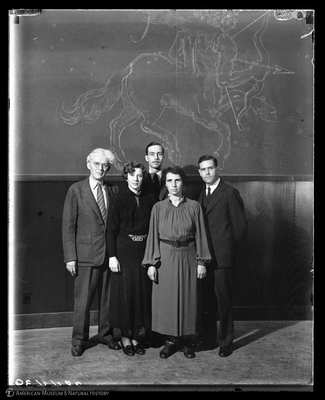
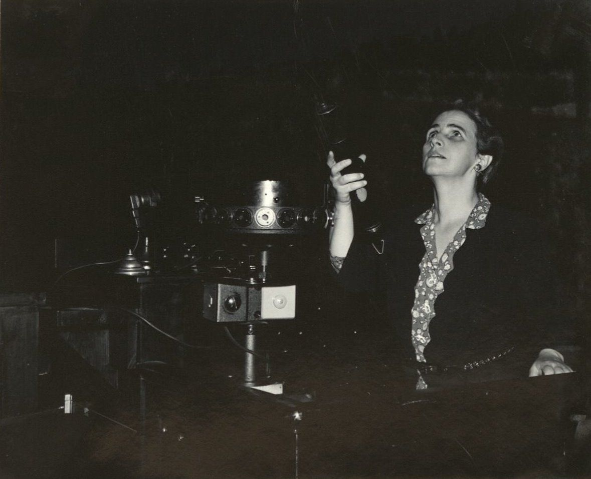

1 / 5

Staff of the Hayden Planetarium, front row, left to right: Marian Lockwood, Dr. Clyde Fisher, William H. Barton, Dorothy A. Bennet; rear row: Charles Federer and Arthur Draper, September, 1936
2 / 5

Assistant Curator Marian Lockwood with group of children in the Copernican Planetarium, Hayden Planetarium, 1940
3 / 5

Staff of Planetarium lecturers, left to right: Clyde Fisher, Dorothy A. Bennett, Arthur L. Draper, Marion Lockwood, and William H. Barton, Jr., October 1, 1935
4 / 5

Staff of Planetarium lecturers, left to right: Clyde Fisher, Dorothy A. Bennett, William H. Barton, Jr., Marion Lockwood, and Arthur L. Draper, October 1, 1935
5 / 5

Astronomer Marian Lockwood at the control panel, Hayden Planetarium, July 1943